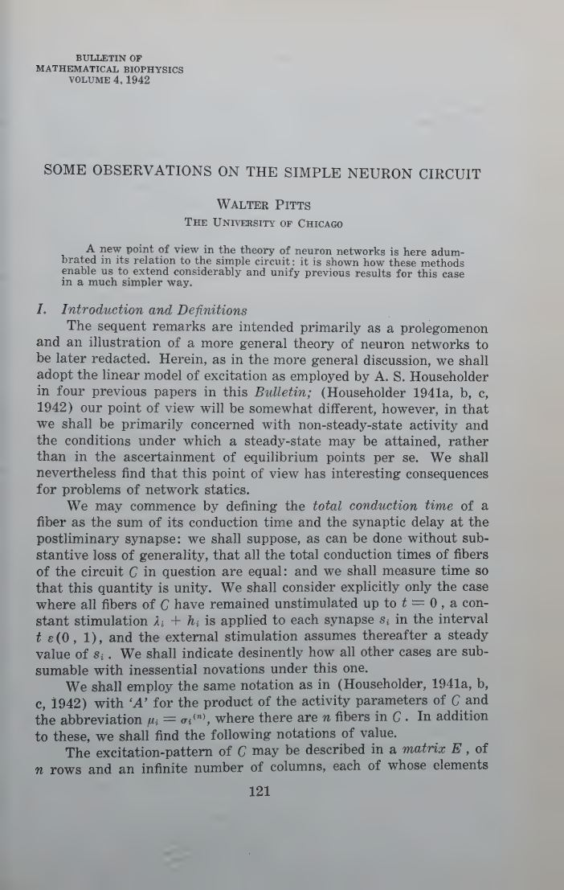
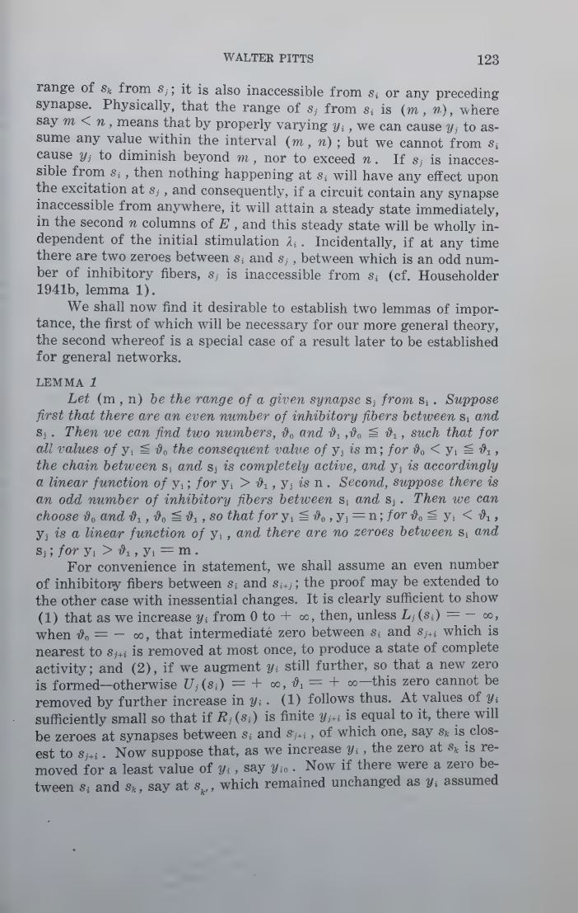
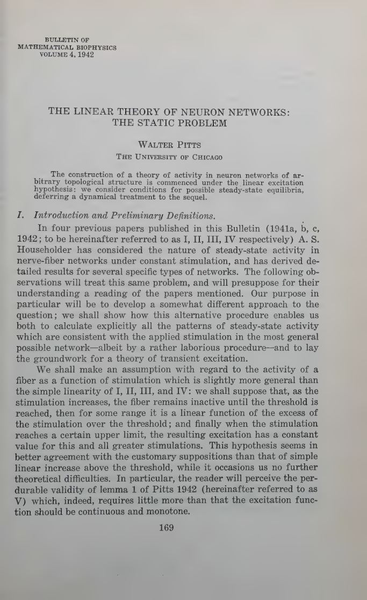
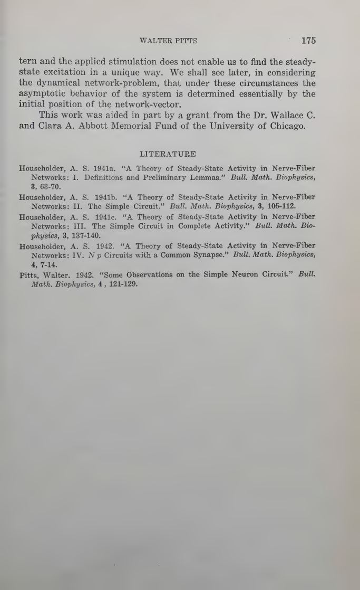
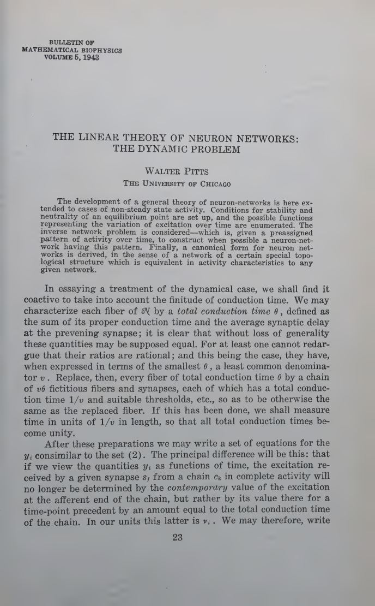
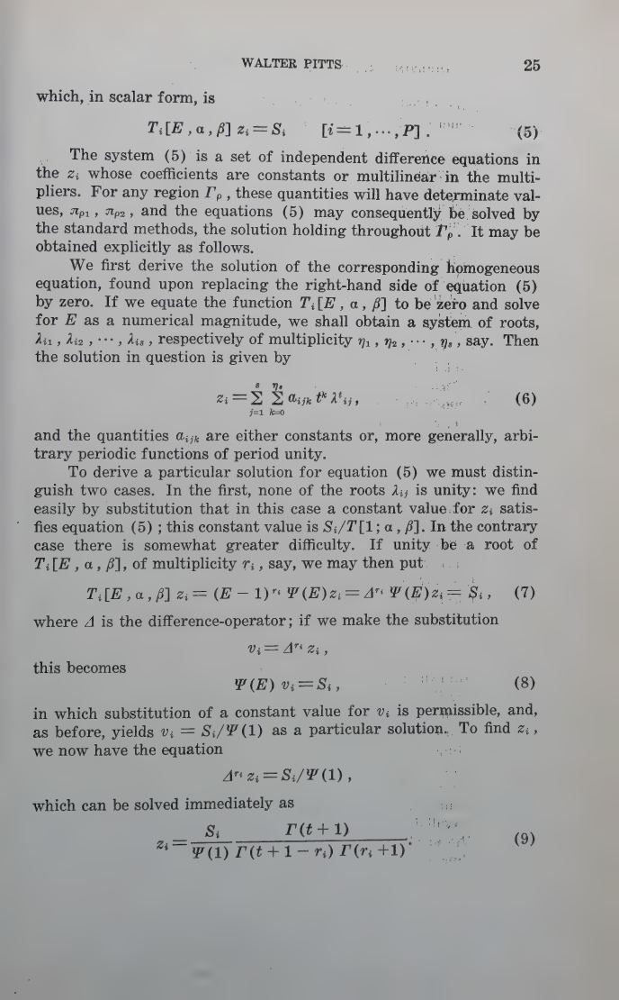
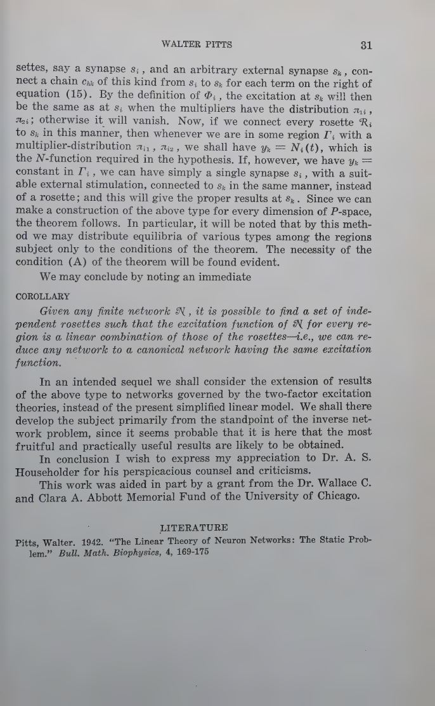

The simple neuron circuit
A new point of view on the simple circuit: non-steady-state activity, total conduction time, ranges of succeeding synapses, accessibility, and the conditions under which a steady state is attained.
Bulletin of Mathematical Biophysics · 1942–1943
The 1943 logical calculus did not come from nowhere. Walter Pitts had already built a general linear theory of neuron networks of arbitrary topology: steady states, stability, neutrality, the inverse network problem, and a canonical form. This is the mathematical foundation McCulloch's logic was built on.
Read the plateThe thesis
Pitts's three early papers are a prolegomenon to a general theory of neuron networks. He adopts the linear model of excitation used by Householder, but shifts the focus from equilibrium points to non-steady-state activity: when does a network settle, when does it oscillate, when is the equilibrium neutral, and can we construct a network with a preassigned pattern of activity over time?
The static paper solves for all steady-state patterns consistent with a stimulation, in an arbitrary topological network. The dynamic paper sets up conditions for stability and neutrality, enumerates the possible time functions, solves the inverse network problem, and derives a canonical form. The 1943 logical calculus is a different model — all-or-none, logical, threshold — but it inherits Pitts's conviction that a net is a mathematical object with a structure.
Laboratory 01 · stability and neutrality
This is a continuous reading of Pitts's linear dynamics: a two-neuron net with connection matrix . Move the entries. The eigenvalues tell you whether the net settles to a stable node, spirals in, diverges, or sits on a neutral centre. The arrows are the vector field; the curves are trajectories.
Pitts used difference equations and the algebra of the shift operator; the continuous portrait is a modern way to see the same stability question.
Laboratory 02 · the excitation function
Pitts's static paper assumes a fibre remains inactive below threshold, responds linearly to the excess of stimulation over threshold, and then saturates. This is the activation curve behind the algebra. Move the drive and the threshold.
A single fibre is not a logic gate yet. It is a continuous transducer with a dead zone and a ceiling — the object Pitts linearises around.
The three papers
A new point of view on the simple circuit: non-steady-state activity, total conduction time, ranges of succeeding synapses, accessibility, and the conditions under which a steady state is attained.
Arbitrary topological networks under the linear excitation hypothesis. All steady-state patterns consistent with a stimulation are calculated; the groundwork for transient excitation is laid.
Stability and neutrality of equilibrium; the possible functions of excitation over time; the inverse network problem; a canonical form for any finite network.
The algebra
The static problem is a linear equation: the equilibrium activity is the solution of . The dynamic problem adds time. Pitts writes it with the shift operator and a polynomial matrix , then reduces the system by invariant factors. The modern reading is a linear recurrence whose eigenvalues decide stability.
The static problem. If is invertible, the equilibrium is unique. If it is singular, the net has a neutral direction or no equilibrium.
The dynamic problem. The eigenvalues of the connection matrix decide whether the net settles, oscillates, or diverges. Pitts's -operator formalism is a predecessor of the modern state-space view.
The fibre. Silent below threshold, linear above it, saturated at the ceiling. This is the activation assumption Pitts linearises around in the static paper.
The voice
“A new point of view in the theory of neuron networks is here adumbrated in its relation to the simple circuit: it is shown how these methods enable us to extend considerably and unify previous results for this case in a much simpler way.”
“The construction of a theory of activity in neuron networks of arbitrary topological structure is commenced under the linear excitation hypothesis.”
“Conditions for stability and neutrality of an equilibrium point are set up, and the possible functions representing the variation of excitation over time are enumerated.”
“The inverse network problem is considered — which is, given a preassigned pattern of activity over time, to construct when possible a neuron-network having this pattern.”
“Given any finite network N, it is possible to find a set of independent rosettes such that the excitation function of N for every region is a linear combination of those of the rosettes — i.e., we can reduce any network to a canonical network having the same excitation function.”
The papers themselves
click to enlarge







Why it matters
The canonical story says McCulloch and Pitts turned neurons into logic gates. True — but Pitts had already turned networks into linear dynamical systems. The 1943 calculus is a logical special case; the 1942–43 papers are the general mathematical background. Without them, the “calculus” looks like a clever analogy. With them, it looks like a deliberate choice of model.
The questions Pitts asked are still live: when does a recurrent network settle? When does it oscillate? Can we construct a network with a desired trajectory? What is the canonical form of a network? Modern RNN theory, control theory, and network neuroscience are all descendants.